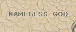

Tuesday, February the 24th, 2004
back to: title, date or indexes
Dear Mr Key : Glancing at the section entitled Make Your Own Glue (23rd February), I misread the third of your cut-out-and-keep labels as “Nameless God”. I very much like the idea of keeping a little tin marked “Nameless God” on a shelf, possibly in the kitchen, and wonder if you could provide a label accordingly. Furthermore, I wonder if Hooting Yard readers can make suggestions as to what I could actually keep in the tin? I am not particularly religious, but this has set me to thinking that it would be a good way to nurture my spirituality. Any ideas? Yours sincerely, Tim Thurn
